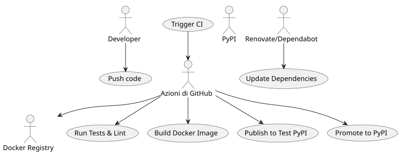
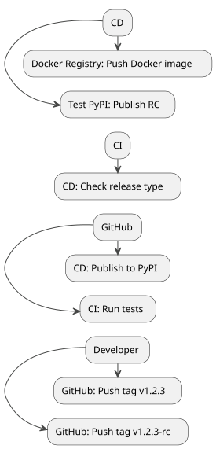
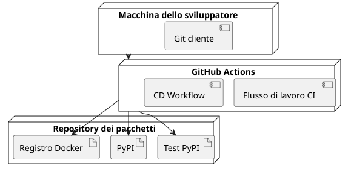

CI/CD Python – Parte 3: Andare oltre con Poetry, Docker e la pubblicazione avanzata
Publié le 19 July 2025
Nelle prime due parti di questa serie, abbiamo : - Stabilito un pipeline CI/CD funzionante per un’applicazione Python con GitHub Actions e PyPI. - Industrializzato questo pipeline con test multi-version, una pubblicazione progressiva tramite Test PyPI e strumenti di qualità e sicurezza.
In questa terza parte, andremo.oltre la semplice pubblicazione su PyPIper costruire una pipeline CI/CD completa, robusta e professionale con: - Poesiaper un packaging moderno e una gestione ottimizzata delle dipendenze. - Dockerper creare build riproducibili e multi-piattaforma - Pubblicazione condizionataper gestire scenari come i release candidates. - Strumenti di automazione(Renovate, Dependabot) per mantenere il pipeline aggiornato senza sforzo.
Integrazione con Poetry
Poetry sostituisce i vecchi strumenti di packaging (setup.py, requirements.txt) centralizzando la gestione delle dipendenze e del build in`pyproject.toml`.
Installazione di Poetry
# Installer Poetry
curl -sSL https://install.python-poetry.org | python3 -
# Vérifier la version
poetry --versionInizializzazione del progetto
# Initialiser un nouveau projet avec Poetry
poetry init
# Suivre l'assistant pour renseigner : nom, version, description, licence, dépendances.Questo genera un file`pyproject.toml` :
[tool.poetry]
name = "playlist-downloader"
version = "0.1.0"
description = "CLI tool for managing YouTube playlists"
authors = ["Christophe Hérolivier <cheroliv@example.com>"]
[tool.poetry.dependencies]
python = ">=3.8"
typer = "^0.9.0"
yt-dlp = "^2023.7.6"
google-api-python-client = "^2.0.0"
google-auth-oauthlib = "^1.0.0"
[tool.poetry.group.dev.dependencies]
pytest = "^7.0"
mypy = "^1.0"
bandit = "^1.7"
safety = "^2.3"
black = "^23.0"
ruff = "^0.1"Aggiunta e installazione di dipendenze
poetry add typer yt-dlp google-api-python-client google-auth-oauthlib
poetry add --group dev pytest mypy black bandit safety ruffPubblicazione con Poetry
Poetry gestisce nativamente la pubblicazione :
# Publication sur Test PyPI
poetry publish --build --repository test-pypi
# Publication sur PyPI
poetry publish --buildQuesto comando utilizza automaticamente le informazioni presenti in`pyproject.toml`.
Builds riproducibili con Docker
Per garantire esecuzioni identiche in sviluppo, CI/CD e produzione, Docker si integra perfettamente con Poetry.
Esempio di Dockerfile
FROM python:3.11-slim
WORKDIR /app
COPY pyproject.toml poetry.lock ./
RUN pip install poetry
RUN poetry install --no-root --only main
COPY . .
CMD ["poetry", "run", "python", "cli.py"]Ciò garantisce: - Un ambiente Python bloccato. - Dipendenze bloccate tramite`poetry.lock`. - Un’immagine eseguibile su qualsiasi sistema che supporta Docker.
Integrazione in GitHub Actions
name: Docker Build
on:
push:
branches: [main]
jobs:
build-docker:
runs-on: ubuntu-latest
steps:
- uses: actions/checkout@v4
- name: Build Docker image
run: docker build -t ghcr.io/${{ github.repository }}:latest .
- name: Push Docker image
run: docker push ghcr.io/${{ github.repository }}:latestPubblicazione condizionata
In un pipeline professionale, è necessario poter pubblicare solo in alcuni casi: - Candidati di rilascio verso Test PyPI. - Versioni stabili verso PyPI. - Build di Docker attivati solo per`main`.
- name: Publish to Test PyPI
if: contains(github.ref, '-rc')
run: poetry publish --build --repository test-pypi
- name: Publish to PyPI
if: startsWith(github.ref, 'refs/tags/v')
run: poetry publish --buildQuesto approccio evita le pubblicazioni accidentali
Automazione delle dipendenze con Renovate e Dependabot
Per evitare che le tue dipendenze diventino obsolete, integra gli strumenti di aggiornamento automatico.
Dependabot
version: 2
updates:
- package-ecosystem: "pip"
directory: "/"
schedule:
interval: "weekly"
- package-ecosystem: "github-actions"
directory: "/"
schedule:
interval: "weekly"Dependabot apre PR ogni settimana per aggiornare le dipendenze Python e GitHub Actions.
Renovare
{
"extends": ["config:base"],
"packageRules": [
{
"matchManagers": ["pip"],
"groupName": "python-dependencies",
"schedule": ["before 6am on monday"]
}
]
}Renovate consente un controllo più fine: raggruppamento di dipendenze, pianificazione e regole avanzate.
Diagrammi PlantUML
Caso d’uso – CI/CD avanzato

Sequenza – Pubblicazione condizionata

Stati – Pipeline CI/CD

Distribuzione – Architettura CI/CD

Conclusion
In questa terza parte, abbiamo visto come: - Modernizzare il packaging di Python con Poetry. - Assicurare build riproducibili tramite Docker. Impostare una pubblicazione condizionale. - Automatizzare l’aggiornamento delle dipendenze.
Ora disponi di un pipeline CI/CDcompleto, industrializzato e sicuro, pronto a evolvere con i suoi progetti
Articoli correlati
14 May 2026